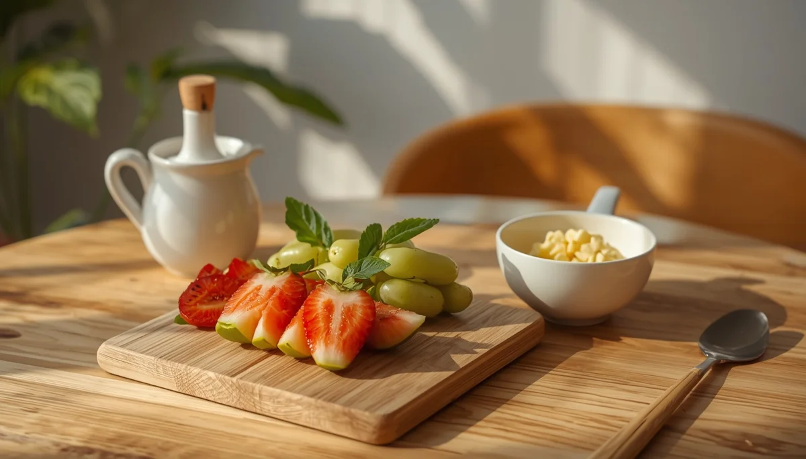
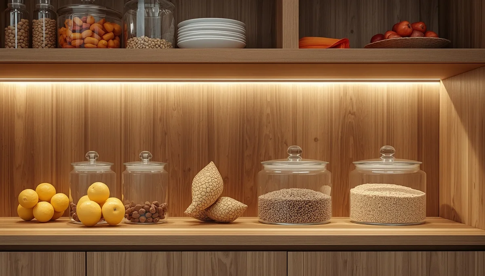
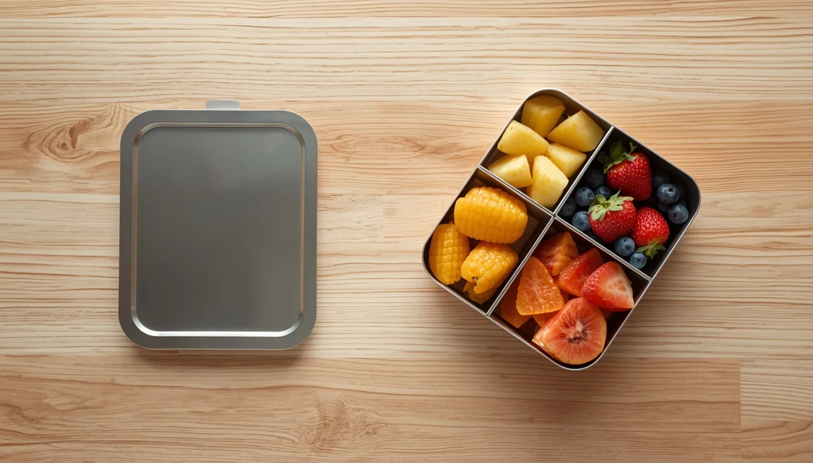

Nutrición saludable: claves para prevenir la malnutrición oculta
Una alimentación equilibrada durante la infancia es la base indispensable para un crecimiento armónico, un sistema inmune fuerte y un desarrollo cognitivo óptimo. En la actualidad, el consumo elevado de productos ultraprocesados puede enmascarar carencias de micronutrientes esenciales a pesar de un aporte calórico suficiente, un fenómeno conocido como malnutrición oculta. He reunido aquí una guía completa para ofrecer alimentos reales, entender las necesidades nutricionales de los menores y fomentar hábitos saludables sin tensiones en la mesa. Pincha en cada tarjeta para profundizar en cada tema.

Comprender las bases de la nutrición infantil
Descubre cómo evoluciona la demanda nutricional desde los primeros años y por qué la calidad de los alimentos marca la diferencia en su desarrollo.
¿Qué es la malnutrición oculta y cómo detectarla?
Conoce los riesgos de las dietas pobres en nutrientes esenciales, el déficit de hierro o zinc y su impacto invisible en la energía y el aprendizaje.
Señales de alerta ante carencias nutricionales
Aprende a identificar indicios sutiles como la fatiga persistente, la falta de concentración, la palidez o el apetito selectivo extremo.

Despensa real: fuera ultraprocesados, hola alimentos vivos
Pautas sencillas para transformar la despensa familiar, priorizar productos frescos y eliminar el azúcar oculto en el día a día.

Organización de menús y hábitos en la mesa
Cómo estructurar platos equilibrados que integren verduras, proteínas de calidad e hidratos complejos sin batallas campales.
Neofobia alimentaria: cuando rechazan probar nuevos alimentos
Comprende por qué los niños atraviesan etapas de rechazo hacia texturas o sabores nuevos y cómo acompañarlo desde la paciencia.

Loncheras y almuerzos escolares nutritivos
Ideas prácticas y sencillas para preparar snacks y meriendas para el colegio libres de azúcares refinados y ricos en energía limpia.
Fomentar una relación sana y sin culpa con la comida
Estrategias respetuosas para evitar premios o castigos con la comida y favorecer la autoregulación de la saciedad desde pequeños.
🥗 Continúa profundizando en la salud y el bienestar infantil
Para acompañar la crianza y los hábitos de bienestar de forma completa, te sugerimos explorar estos recursos:
- 🎙️ Escucha el podcast: Límites con amor y regulación emocional (Ep. 07)
- 📥 Descarga el recurso práctico: Ritual de Sueño Tranquilo (PDF)